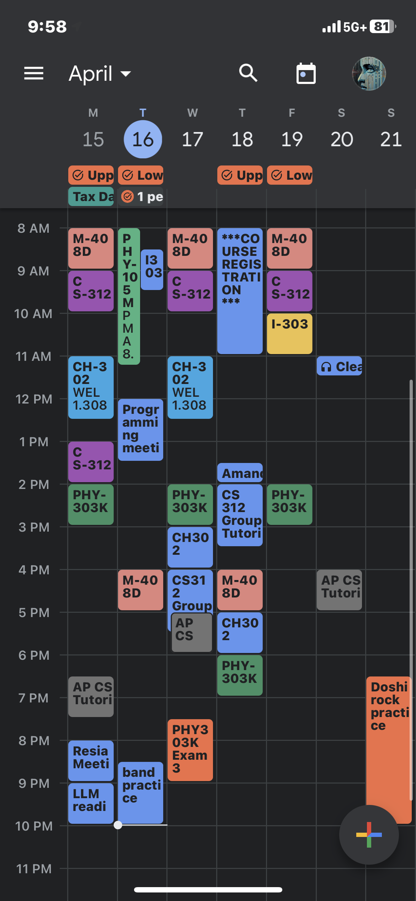
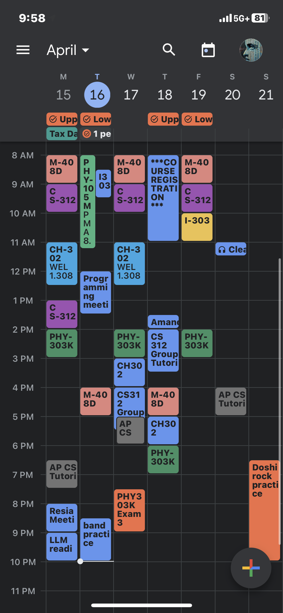

If you're reading this, you're probably one of the four cases:
1) you have been admitted to UT Austin.
2) you want to attend || attend || attended UT Austin.
3) you wanna know how I transferred to CS & ECE.
4) you know me.
Well, you're in the right place if you wanna briefly hear how I spent my first year of college.
If not, this is a kind reminder to go spend a more meaningful time(go talk to your parents!)
Let me briefly introduce myself before we begin:
I'm David, I'm turning 20 on December 19th of 2024,
I don't have greencard nor permanent residency nor citizenship,
I'm not the most brilliant student out there but I try.
Here is an awesome picture of me that my friends took, while I was asleep :)
Frankly, I had a rough start to my semester. Because of how late the orientation for international students happen, I didn't have that many options for course registration.
Because my orientation was online, I wasn't very familiar with building locations on campus. I also couldn't get familiarized with the Texan heat. I'm still glad that I didn't die in the first
couple of weeks in Austin, due to overheating.
If you've done your research, you probably know what UT Austin is famous for: CS, Business, Petroleum Engineering, and other engineering majors like MechE, ECE, Biomedical Engineering.
UT is better for graduate school of course, however, the mentioned courses are still somewhat prestigious around here.
If you're an aspiring CS student, let me help you understand what being a CS major at UT means:
I highly recommend that you take CS312 even if you took AP CompSci, since it's supposed to be a "weed out" course that indicates your compatibility to CS.
I've programmed before, thus I can safely say that CS312 is not an introductory level that you would expect in other departments. Hopefully you know Java.
If not, you should really get a kick out of the office hours and study sessions. Exam scores are weighted very heavily, so be cautious!
CS312 is usually taught in GDC(Gates Dell Complex), and so you'll get a taste of the smell in GDC.
Here is what my daily schedule looked like during semester 2:

Yes, but unfortunately, I had 8AM lectures for 4 out of 5 weekdays. My schedule looks busy because of how it's organized, but it actually wasn't that bad.
I wanted to put my schedule here to explain what extracurricular activities I had participated in. Let me list them out:
- I joined AI Health Lab to gain research experience
- I participated in Catalyst LLC, and started an AI/ML project with their funding
- I played keyboard in the Undergraduate Korean Association band.
- I won a competitive funding and mentorship with my project
- I taught AP Computer Science A for my friend's brother(paid)
- I emailed bunch of professors and chatted for new insights
And here are the list of daily things that I stuck to, or I tried to stick to:
- I got my homework done ahead of time
- I prepped for exams at least 3-4 days ahead
- Wrote bunch of things to memorize on sticky notes, for memorization
- At least 2 meals per day
- Hit the gym for at least an hour(3+ times a week)
- Play the piano for at least 30 mins
For reference I had a bunch of sticky notes that looked like this:
Goodnotes also has a functionality where you could create study sets. And of course, Anki and Quizlet are a great option as well.
Like I said, I'm nothing compared to some of the students out there, but I did win some good grades in the most unexpected courses.
 I'm not so proud of how I spent my first semester, so I didn't talk about it very much.
I'm not so proud of how I spent my first semester, so I didn't talk about it very much.
Let's just say that I took my time to familiarize myself with the college settings(make friends, etc.)
Enough of that, let me introduce some other things that I needed to consider during my first year.
First of all, if you want to transfer, you NEED to attend information sessions. You can simply look them up with keywords like CNS internal transfer info session. Same goes for Cockrell.
For Cockrell, you need to be careful with your course registration as well. You need to take 4 technical courses(like M408C&D, PHY303K, 105M). Courses like CH301&302, BIO311C&D do not count,
and the technical courses also need to be taken in residency, meaning that AP/IB credits do not count either. Be mindful and plan ahead!
Also, if you want to live off campus for your second year, you need to start looking for apartments / housing early. 2400 Nueces is a pretty good option in my opinion, however, getting the lease is
competitive. Getting an affordable and fair lease is actually competitive in general, so it's better for you to find roommates and start early.
Lastly, I really tried to have fun. You could never be a Freshman in college again. Go out, make friends, don't do stupid things like drug. Austin public library is pretty nice to study at, so if
you get tired of the PCL, WCP, or the ECE building(where a lot of students study at), try some off campus locations! There's also Mozart which is a nice cafe, but I often enjoyed coffee from JCL and
sat by the Blanton museum to study.
If you have any specific questions about my experiences such as the internal transfer preparation, please email me!
CS312 is usually taught in GDC(Gates Dell Complex), and so you'll get a taste of the smell in GDC.
Here is what my daily schedule looked like during semester 2:

Yes, but unfortunately, I had 8AM lectures for 4 out of 5 weekdays. My schedule looks busy because of how it's organized, but it actually wasn't that bad.
I wanted to put my schedule here to explain what extracurricular activities I had participated in. Let me list them out:
- I joined AI Health Lab to gain research experience
- I participated in Catalyst LLC, and started an AI/ML project with their funding
- I played keyboard in the Undergraduate Korean Association band.
- I won a competitive funding and mentorship with my project
- I taught AP Computer Science A for my friend's brother(paid)
- I emailed bunch of professors and chatted for new insights
And here are the list of daily things that I stuck to, or I tried to stick to:
- I got my homework done ahead of time
- I prepped for exams at least 3-4 days ahead
- Wrote bunch of things to memorize on sticky notes, for memorization
- At least 2 meals per day
- Hit the gym for at least an hour(3+ times a week)
- Play the piano for at least 30 mins
For reference I had a bunch of sticky notes that looked like this:
Goodnotes also has a functionality where you could create study sets. And of course, Anki and Quizlet are a great option as well.
Like I said, I'm nothing compared to some of the students out there, but I did win some good grades in the most unexpected courses.
I'm not so proud of how I spent my first semester, so I didn't talk about it very much.
Let's just say that I took my time to familiarize myself with the college settings(make friends, etc.)
Enough of that, let me introduce some other things that I needed to consider during my first year.
First of all, if you want to transfer, you NEED to attend information sessions. You can simply look them up with keywords like CNS internal transfer info session. Same goes for Cockrell.
For Cockrell, you need to be careful with your course registration as well. You need to take 4 technical courses(like M408C&D, PHY303K, 105M). Courses like CH301&302, BIO311C&D do not count,
and the technical courses also need to be taken in residency, meaning that AP/IB credits do not count either. Be mindful and plan ahead!
Also, if you want to live off campus for your second year, you need to start looking for apartments / housing early. 2400 Nueces is a pretty good option in my opinion, however, getting the lease is
competitive. Getting an affordable and fair lease is actually competitive in general, so it's better for you to find roommates and start early.
Lastly, I really tried to have fun. You could never be a Freshman in college again. Go out, make friends, don't do stupid things like drug. Austin public library is pretty nice to study at, so if
you get tired of the PCL, WCP, or the ECE building(where a lot of students study at), try some off campus locations! There's also Mozart which is a nice cafe, but I often enjoyed coffee from JCL and
sat by the Blanton museum to study.
If you have any specific questions about my experiences such as the internal transfer preparation, please email me!